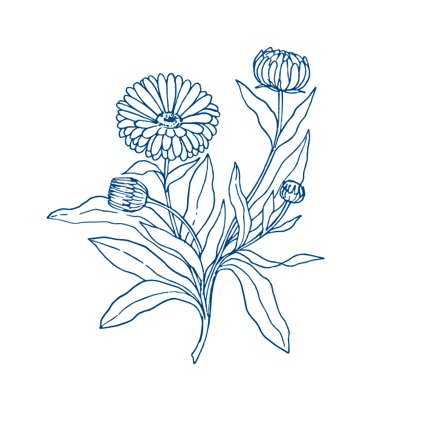

СТМ
Нам нравится эта аббревиатура: вот как раз вчера перед юбилеем коллеги ходили в известный сетевой гипермаркет тортик покупать. Выбрали собственную торговую марку этого гипермаркета и не пожалели: вкусно и недорого. Наверное, с лекарствами и БАДами тоже так! Или не совсем?
Итак, что же это такое?
СТМ – это бренд, владельцем которого является реализующая структура. То есть это не столько определение препарата, сколько аббревиатура маркетингового инструмента.

Кто придумал?
Маркетологи. В фармацевтический бизнес идея собственных торговых марок пришла из других сфер торговли. С точки зрения коммерции вещь довольно удобная: ведь если СТМ принадлежит узнаваемой торговой сети, это автоматически добавляет доверия соответствующему фармацевтическому бренду

А что там с эффективностью?
БАДы и лекарства, которые продаются как СТМ, чаще всего не сертифицированы, то есть даже собственного производства обычно не имеют и изготавливаются где-то на стороне. В общем, проследить, откуда ноги растут в данном конкретном препарате и есть ли в нем хоть какая-то польза в случае с СТМ еще сложнее, чем с сертифицированным БАДом.